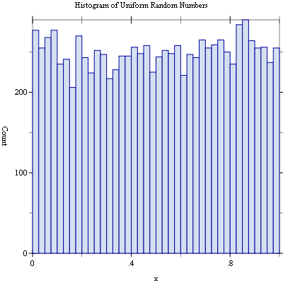
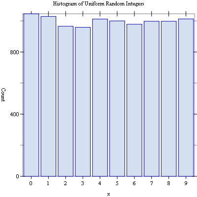

6 Random Number Generation
The Science Collection provides additional functionality to the Racket implementation of SRFI 27 by Sabastian Egner, which, in turn, is a 54-bit implementation of Pierre L’Ecuyer’s MRG32k3a pseudo-random number generator.
The functions described in this chapter are defined in the "random-source.rkt" file in the Science Collection and are made available using the form:
| (require (planet williams/science/random-source)) |
6.1 The SRFI 27 Specification
The following functions are defined in the SRFI specification and are, in purn, provided by the random-source module. The contract shows here are for documentation purposes only–the Racket implementation of SRFI does not define contracts for its functions.
procedure
n : (integer-in 1 +inf.0)
procedure
(random-real) → (real-in 0.0 1.0)
syntax
procedure
procedure
(random-source? x) → boolean?
x : any/c
procedure
(random-source-state-ref s) → any
s : random-source? (random-source-state-set! s state) → any s : random-source? state : any/c
procedure
(random-source-randomize! s) → any
s : random-state?
procedure
(random-source-pseudo-randomize! s i j) → any
s : random-source? i : natural-number/c j : natural-number/c
procedure
→ (-> (integer-in 1 +inf.0) natural-number/c) s : random-source
procedure
(random-source-make-reals s) → (-> (real-in 0.0 1.0))
s : random-source? (random-source-make-reals s unit) → (-> (real-in 0.0 1.0)) s : random-source? unit : (real-in 0.0 1.0)
The optional parameter unit determines the type of numbers being produced by rand and the quantization of the output. unit must be a number such that 0 < unit < 1. The numbers created by rand are of the same numerical type as unit and the potential output values are spaced by at most unit. One can imagine rand to create numbers as x*unit where x is a random integer in {1, ..., floor(1/unit)-1}. Note, however, that this need not be the way the values are actually created and that the actual resolution of rand can be much higher than unit. In case unit is absent it defaults to a reasonably small value (related to the width of the mantissa of an efficient number format).
6.2 Additional Random Number Functionality
The Science Collection provides additional functionality to that provided by SRFI 27.
6.2.1 The current-random-source parameter
The main additional functionality is to define a parameter, current-random-source, that provides a separate random source reference for each thread. The default value for this random source reference is default-random-source.
The use of the current-random-source parameter overcomes the difficulty with assignment to default-random-source. However, the routines random-integer and random-real use the default-random-source variable and are unaware of the current-random-source parameter.
parameter
(current-random-source s) → void? s : random-source?
syntax
(with-random-source s body ...+)
syntax
(with-new-random-source body ...+)
6.2.2 Uniform Random Numbers
The Science Collection provides alternatives to the random-integer and random-real functions that are aware of the current-random-source parameter. The also provide a more convenient interface than random-source-make-integers and random-source-make-reals.
procedure
(random-uniform-int s n) → natural-number?
s : random-source? n : (integer-in 1 +inf.0) (random-uniform-int n) → natural-number? n : (integer-in 1 +inf.0)
procedure
(random-uniform s) → (real-in 0.0 1.0)
s : random-source? (random-uniform) → (real-in 0.0 1.0)
6.2.3 Miscellaneous Functions
These functions provide an alternative set of functions to get or set the state of a random-state. These functions match the conventions for structures in Racket.
procedure
(random-source-state s) → any
s : random-source?
procedure
(set-random-source-state! s state) → any
s : random-state? state : any/c
6.2.4 Random Source Vectors
These functions provide a convenient method for generating a vector of repeatable random sources.
procedure
(make-random-source-vector n i) → (vectorof random-source?)
n : natural-number/c i : natural-number/c (make-random-source-vector n) → (vector-of random-source?) n : natural-number/c
6.3 Random Number Examples
Example: Histogram of uniform random numbers.
#lang racket (require (planet williams/science/random-source) (planet williams/science/histogram-with-graphics)) (let ((h (make-histogram-with-ranges-uniform 40 0 1)) (s (make-random-source))) (random-source-randomize! s) (with-random-source s (for ((i (in-range 10000))) (histogram-increment! h (random-uniform)))) (histogram-plot h "Histogram of Uniform Random Numbers"))
The following figure shows an example of the resulting histogram.

Example: Histogram of uniform random integers.
#lang racket (require (planet williams/science/random-source) (planet williams/science/histogram-with-graphics)) (let ((h (make-discrete-histogram)) (s (make-random-source))) (random-source-randomize! s) (with-random-source s (for ((i (in-range 10000))) (discrete-histogram-increment! h (random-uniform-int 10)))) (discrete-histogram-plot h "Histogram of Uniform Random Integers"))
The following figure shows an example of the resulting histogram.
